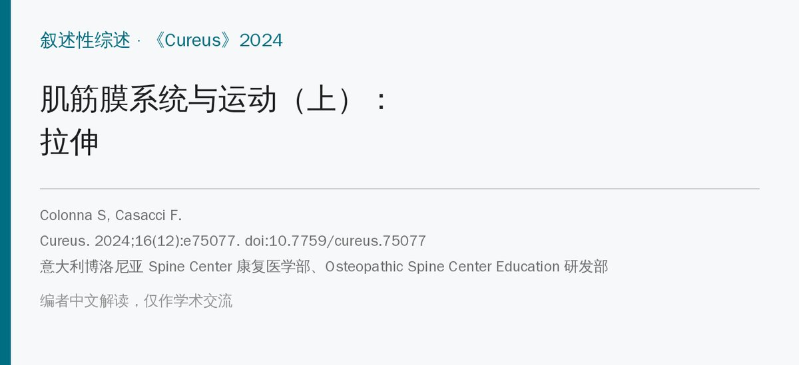
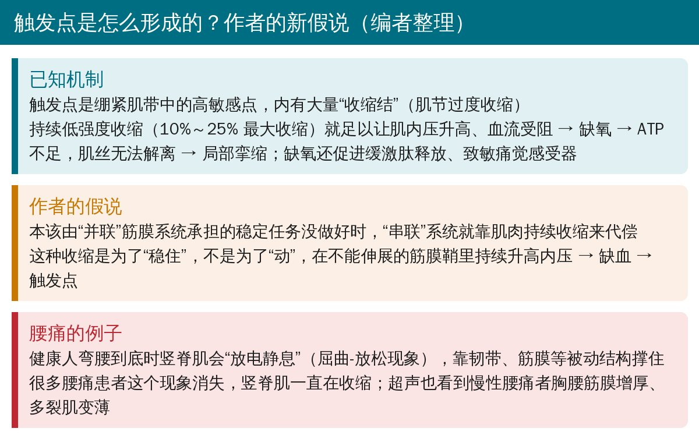
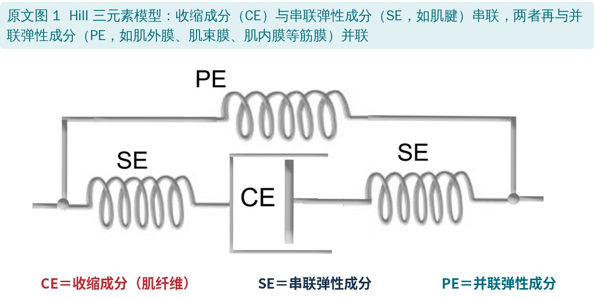
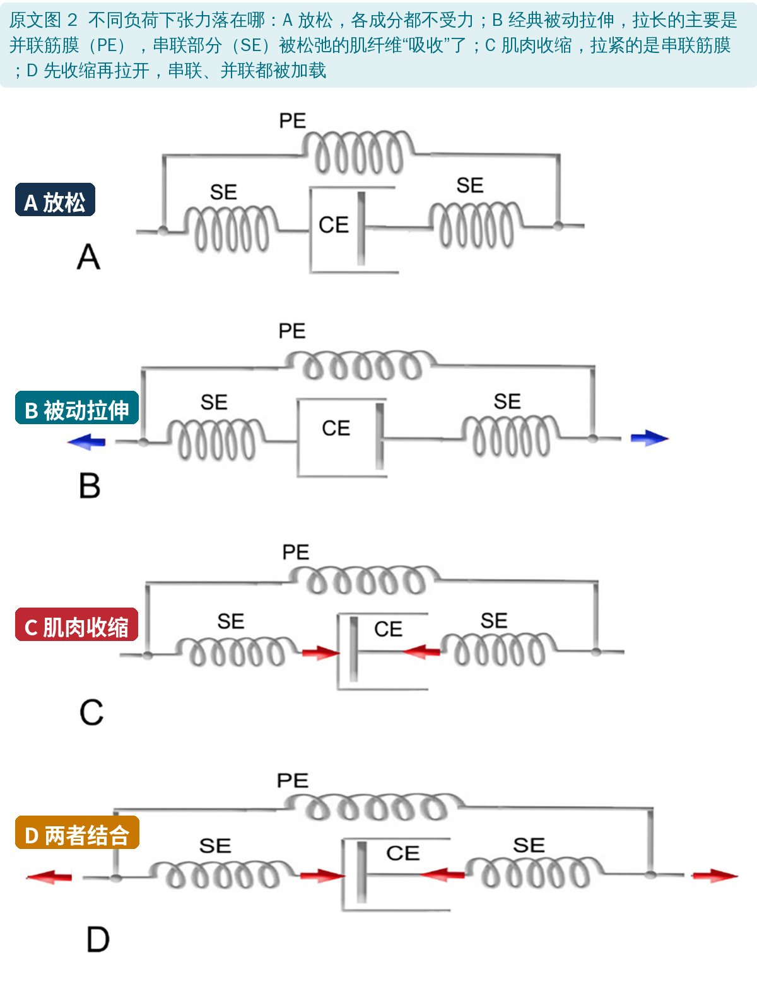
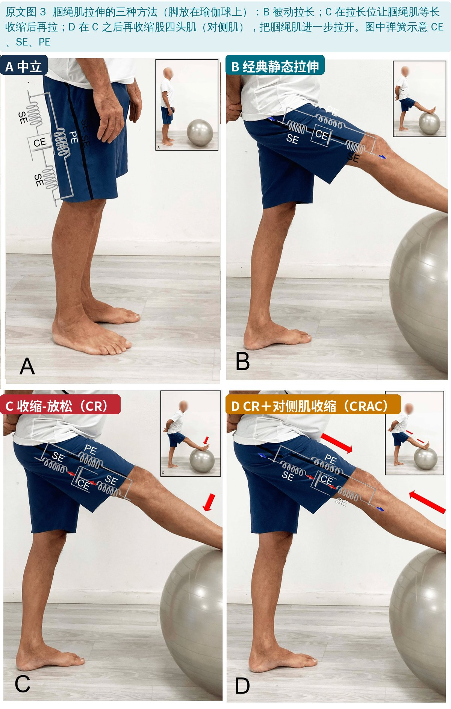
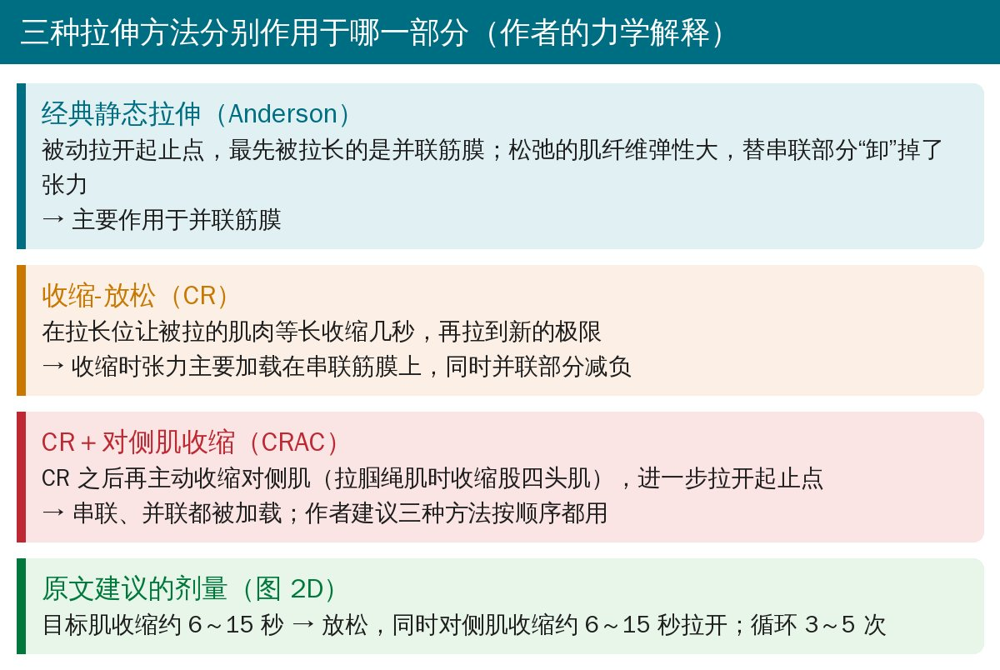

🔖原文信息（编者中文重排）
📚 文献信息
▪ Colonna S, Casacci F. Myofascial System and Physical Exercise: A Narrative Review on Stretching (Part I). Cureus. 2024;16(12):e75077. doi:10.7759/cureus.75077
▪ 作者单位：意大利博洛尼亚 Spine Center 康复医学部、Osteopathic Spine Center Education 研发部
▪ 文章类型：叙述性综述＋作者假说（两篇系列的上篇；下篇讲筋膜刚度不足和如何“增加刚度”）
• 筋膜是包裹、分隔、连接肌肉和器官的纤维结缔组织。筋膜命名委员会对“筋膜系统”的定义更广：包括脂肪组织、血管神经鞘、腱膜、深浅筋膜、关节囊、韧带、肌腱、肌内外结缔组织（肌内膜、肌束膜、肌外膜）等
• 作者采用 Stecco 的简化分类：浅筋膜、深筋膜（包括包裹肌肉的肌外膜）、内脏筋膜；深筋膜从躯干一直延续到四肢，可以“绕过关节”并联传递张力
• Huijing 的研究：肌肉张力只有约 70% 经肌腱传递，其余约 30% 传给周围结缔组织
• 筋膜由致密结缔组织（Ⅰ、Ⅲ型胶原）和疏松结缔组织层层相间组成，具有黏弹性；还包括细胞外基质和液体成分
• 本文只讨论筋膜的一个功能：传递张力
• 结缔组织变硬见于多种疼痛综合征：运动诱发的小腿骨筋膜室综合征、髂胫束摩擦综合征、网球肘/高尔夫球肘、冻结肩、足底筋膜炎、掌腱膜挛缩等
• 胸腰筋膜在弯腰时承担大量机械力，富含伤害感受器；慢性腰痛男性的胸腰筋膜有增厚趋势，筋膜与下方肌肉之间的滑动减少
• Stecco 等认为，筋膜层之间润滑用的透明质酸生成改变，会导致筋膜“致密化”和疼痛
• 髋部皮肤神经末梢最密（64/cm²），浅筋膜 33/cm²、深筋膜 19/cm²

🔖触发点的形成机制和作者的新假说（编者整理）
• 活动性触发点：引起临床疼痛，按压时出现熟悉的痛，限制肌肉伸展、使肌肉无力，可引出局部抽搐反应
• 潜伏性触发点：平时不痛，用力按才痛，同样在紧张带内、增加张力、限制活动度
• 触发点中心的氧分压几乎为零；毛细血管压从动脉端约 35 mmHg 降到静脉端约 15 mmHg，所以肌肉收缩时血流会被暂时阻断，节律性收缩-放松（肌泵）能改善血流，持续收缩则不能

🔖原文图 1：Hill 三元素模型
• 收缩成分（CE）：肌动蛋白-肌球蛋白滑行丝，负责产生力和改变长度
• 串联弹性成分（SE）：与收缩成分首尾相连，如肌腱，把收缩力传到骨
• 并联弹性成分（PE）：与前两者并排，如肌外膜、肌束膜、肌内膜，负责储存和释放弹性能量；袋鼠、羚羊的下肢筋膜就像弹簧，截肢运动员的弹性刀片假肢起的也是类似作用
• 这个模型是一维的简化，并非所有人都认同，但便于理解拉伸作用于哪一部分
• 收缩-放松（CR）：把要拉的肌肉被动拉到“屏障”，等长收缩几秒，再拉到新的屏障。传统解释是高尔基腱器官引起的自生抑制
• CR＋对侧肌收缩（CRAC）：在 CR 之后再收缩对侧肌（拮抗肌），传统解释是交互抑制
• 多项研究显示 PNF 比静态或弹振拉伸增加更多活动度
• 但：Moore 和 Hutton 的肌电研究发现，CRAC 活动度增加最多，被拉肌肉的肌电反而最高——不是“放松”了；后续研究也证实这个“悖论”
• 新的认识：高尔基腱器官在整个活动范围内对弱的主动/被动收缩都有反应；自生抑制只降低、不消除运动神经元兴奋性，而且只在收缩期间存在，不太可能影响之后的放松期
• “牵拉耐受增加”能解释活动度变大，但解释不了剪切波弹性成像测到的拉伸后肌肉刚度立即下降——所以 Carla Stecco 问：我们拉的到底是筋膜还是肌肉？
• 神经层面：静态拉伸会降低脊髓反射兴奋性（比目鱼肌 H 反射、T 反射降低）；Schleip 认为手法后的即时组织变化来自筋膜中机械感受器（Ruffini 小体、间质感受器）引起的张力和自主神经变化

🔖原文图 2：不同负荷下张力落在哪

🔖原文图 3：腘绳肌拉伸的三种方法
• 抗阻训练：在常规活动范围内加载肌肉，强化与肌纤维串联的筋膜，对并联筋膜作用小
• 经典静态拉伸：肌肉放松，松弛的肌纤维比串联的筋膜/肌腱更有弹性，“吸收”了大部分牵拉；所以缓慢、轻柔、持续的拉伸主要刺激并联筋膜
• CR：在拉长位收缩，张力主要加到串联筋膜上，同时减轻并联部分
• CRAC：再收缩对侧肌，进一步拉开起止点，串联、并联都被加载

🔖三种方法对照和剂量（编者根据原文整理）
作者的结论：如果这个假说被证实，完整的筋膜拉伸应把三种方法按顺序都用上；肌肉能量技术等手法也应考虑串联、并联的区别。
• 核心观点是假说：触发点的“串联代偿”机制、三种拉伸分别作用于串联/并联筋膜，都是作者基于简化模型的推理，没有实验数据
• 模型过度简化：Hill 模型的“串联、并联”是数学上的抽象，活体中哪层筋膜属于哪一类，作者自己也承认还说不清
• 有价值的部分：系统整理了 PNF“神经抑制”解释被质疑的证据，提醒拉伸效果可能更多来自组织力学和感觉改变
• 叙述性综述，没有系统检索；作者团队来自整骨教育机构
• CR 的定义前后矛盾：先说 CR 是在屏障处做等长收缩，后又说“理论上 CR 是抗阻等张收缩、HR（保持-放松）才是等长收缩”
• CRAC 的神经机制写反：说对侧肌收缩时，对侧肌的肌梭冲动经 Ia 抑制性中间神经元“抑制对侧肌本身”的运动神经元——交互抑制应作用于被拉伸的目标肌
• “主动肌”还是“拮抗肌”：关键词和图注写 CRAC 是“agonist contraction”，正文写“antagonist muscle group”，指同一块肌肉却用了相反的名称
• 图 2 图注混乱：D 图说明里先描述“收缩 6～15 秒 → 对侧肌收缩 6～15 秒、循环 3～5 次”，紧接着又说“在 C 的状态下叠加对侧肌等长收缩、保持 6～15 秒”，两种做法混在一起
• 人称：说 Stecco 等是“一位意大利研究者，他……”，把作者团队当成一个人
• 拼写：Schleip 写成 “Shleip”，Hoffmann 写成 “Hoffman”
• “首次”的说法：结论称本文是“首篇同时讨论筋膜刚度过高和过低两种功能障碍的文章”，缺乏依据
• 拉伸方法可以组合用：静态拉伸 → 收缩-放松 → 收缩-放松＋对侧肌收缩，各 6～15 秒、循环 3～5 次，是一个可尝试的顺序
• 别再用“放松了肌肉”解释 PNF：效果可能主要来自组织力学和牵拉耐受改变
• 持续低强度收缩可能是触发点的诱因：久坐弯腰、长时间维持姿势时，注意让肌肉有节律地收缩-放松
• 腰痛患者弯腰时屈曲-放松现象消失，提示被动结构“撑不住”，需要的可能不是更多拉伸，而是下篇讨论的“增加刚度”
欢迎关注骨科康复小黄公众号，获取更多物理治疗的专业知识！
📄参考文献：
Colonna S, Casacci F. Myofascial System and Physical Exercise: A Narrative Review on Stretching (Part I). Cureus. 2024;16(12):e75077. doi:10.7759/cureus.75077
原文以 CC BY 4.0 协议开放获取，版权归原作者所有。本文为学术交流中文解读：原文图 1～3 引自原文，图中中文标签为编者所加；机制卡和对照卡为编者整理。仅供学习交流，如有侵权请联系删除。